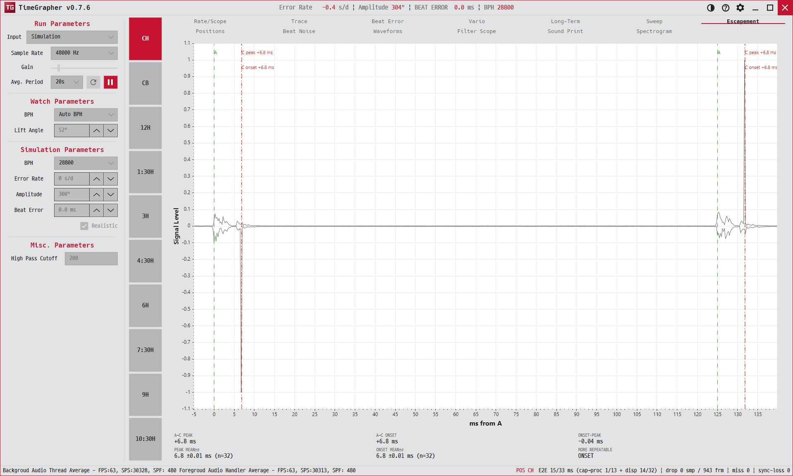

12. Escapement
비트 내부의 미세 타이밍을 분석해, 조정 기준으로 C 피크와 C 온셋 중 어느 쪽이 더 반복적인지 알려 줍니다.
Analyzes fine intra-beat timing to tell which reference — C peak or C onset — is more repeatable for regulation.
Analisa a temporização fina dentro da batida para indicar qual referência — C peak ou C onset — é mais repetível para a regulagem.

용도 · Purpose · Finalidade
시계를 조정할 때 기준으로 삼을 타이밍 포인트를 정합니다. 흔들림(표준편차)이 더 작은 기준을 쓰면 더 정밀하게 맞출 수 있습니다.
Picks the timing point to regulate against — using the reference with smaller jitter (std dev) lets you set the watch more precisely.
Escolhe o ponto de temporização que servirá de referência para a regulagem — usar a referência com menor jitter (desvio padrão) permite ajustar o relógio com mais precisão.
무엇이 보이나 · What's shown · O que é exibido
- X축X axisEixo X
- ms — tic A 기준(tic A=0)으로 tic→toc 한 진동을 실제 간격대로 확대(항상 tic이 먼저).tic-A-relative (tic A = 0), zoomed to one tic→toc oscillation at its real spacing (tic always first).relativo ao tic A (tic A = 0), ampliado para uma oscilação tic→toc no seu espaçamento real (o tic sempre vem primeiro).
- Y축Y axisEixo Y
- Signal Level — 최신 비트의 양극 파형(가능할 때) 또는 정류 엔벨로프.the latest beat's bipolar waveform (when available) or rectified envelope.a forma de onda bipolar da batida mais recente (quando disponível) ou o envelope retificado.
- 마커MarkersMarcadores
- A(초록 점선), C 피크(빨강 점선), C 온셋(빨강 점). 라벨
C peak A→C: X.X ms등.A (green dashed), C peak (red dashed), C onset (red dotted). Labels likeC peak A→C: X.X ms.A (verde tracejado), pico de C (vermelho tracejado), onset de C (vermelho pontilhado). Rótulos comoC peak A→C: X.X ms.
수치판 — A→C PEAK, A→C ONSET(현재 비트 간격), ONSET-PEAK(둘의 차이), PEAK MEAN±σ, ONSET MEAN±σ(최근 32비트 평균±표준편차), MORE REPEATABLE(판정: ONSET / PEAK / —).
Readout — A→C PEAK, A→C ONSET (current beat), ONSET-PEAK (their delta), PEAK MEAN±σ, ONSET MEAN±σ (mean±std over last 32 beats), MORE REPEATABLE (verdict: ONSET / PEAK / —).
Painel de leitura — A→C PEAK, A→C ONSET (batida atual), ONSET-PEAK (a diferença entre eles), PEAK MEAN±σ, ONSET MEAN±σ (média±desvio padrão sobre as últimas 32 batidas), MORE REPEATABLE (veredito: ONSET / PEAK / —).
읽는 법 · How to read · Como ler
- PEAK MEAN±σ와 ONSET MEAN±σ를 비교 — σ가 더 작은 쪽이 더 반복적입니다.Compare PEAK MEAN±σ vs ONSET MEAN±σ — the one with the smaller σ is more repeatable.Compare PEAK MEAN±σ com ONSET MEAN±σ — o que tiver o menor σ é mais repetível.
- MORE REPEATABLE 판정은 양쪽 모두 8샘플 이상 모이면 더 안정적인 기준을 표시합니다. 그 기준으로 조정하세요.MORE REPEATABLE shows the steadier reference once both have ≥8 samples — regulate against that one.MORE REPEATABLE mostra a referência mais estável quando ambas têm ≥8 amostras — regule com base nela.
- ONSET이 더 안정적이면 피크 대신 C 클러스터의 시작 가장자리로 시계를 맞출 수 있습니다.If ONSET is steadier, set the watch by the C-cluster's leading edge instead of its peak.Se o ONSET for mais estável, ajuste o relógio pela borda inicial do cluster de C em vez do seu pico.
Amplitude 계산에 C 온셋 시각을 쓰려면 Misc → Use C-onset timing을 켜세요.
To use C-onset timing for Amplitude, enable Misc → Use C-onset timing.
Para usar a temporização de C-onset no Amplitude, ative Misc → Use C-onset timing.